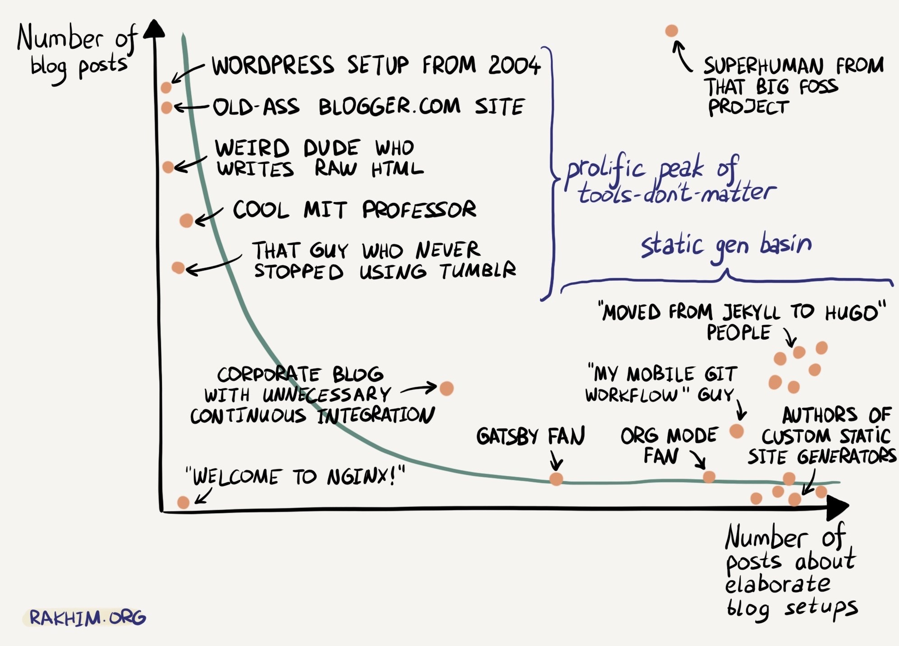

结合 denote 和 org-publish 写博客
{kind=link}

前言
最近又折腾了一下博客的构建，起因是我打算写一些关于音乐专辑的分享文章，可能会写很多篇。
类似 Zine 一样，我可能取名为 album，然后从 album#0 一直往下写，文章的基本内容应该有专辑名称、创作者、创作年份。
但问题是，album#0 这个名字我看不出来是关于什么专辑，什么创作者的，如果后面写得多了，我要判断有没有分享过，那只能搜索一下了。
或许你会说，把专辑名称、创作者等信息写到文件名里不就好了，例如 album-0--album-name--creator--date.org 。
确实可以这样，不过需要处理 2 个问题：
- 建立一个统一的命名规则
- 专辑的信息可能会有变动，或许后续还想新增一些信息，此时文件名就会改变，而我发布的 URL 也是依赖文件名的，URL 也会跟着变，但我希望文章一旦发布之后，URL 就尽量固定下来，避免有人引用后跳转出现 404
关于命名规则，我觉得 denote 的命名规则很好，我也一直在用 denote 来记笔记，所以打算用 denote 来解决命名规则的问题。
于是我就搜索了一下有没有用 denote 写博客，还真找到了一些：
- Generating a Blog Site from Denote Entries | System Crafters
- Blogging with Denote and Hugo | Jiewawa's blog
- Blogging using Denote and Hugo | Yejun Su
- Blogging with Org Mode and Denote | Uncharted Mind Space
我先是尝试了一下 Generating a Blog Site from Denote Entries | System Crafters 里的方法，这篇文章使用 weblorg 构建博客。
weblorg 看起来挺不错，足够简单，而且更重要的是它支持一个 slug 属性， slug 优先于 title，如果存在 slug 就会用 slug 生成 HTML 的文件名，这正好解决了我的第二个问题，即固定 URL，不随着标题等变化。
除此之外，weblorg 的 template 系统看起来也比 org-publish 用起来简单；它还有一直想要的文章分类 (category) 功能。
兴冲冲的尝试了一下 weblorg ，不太清楚是不是我的 org 文件有些复杂，构建了几次都失败了，有一个报错但没排查出问题来。
又考虑到到 weblorg 似乎用的人不多，维护频率也不是很高，担心后面除了问题处理起来麻烦，就暂时搁置了。
因为计划用 denote，denote 依赖文件顶部的 front matter 信息，所以我也计划将所有博客文章的 front matter 整理一下，为此又看了遍 org-publish 和 org-mode export 的 info，了解一下都有什么 front matter，以及它们的作用。
在这个过程中，我发现了 EXPORT_FILE_NAME:
The name of the output file to be generated.
Otherwise, Org generates the file name based on the buffer name and the extension based on the backend format.
也就是说，通过 EXPORT_FILE_NAME 我可以改变导出的 HTML 的文件名。
折腾了一下还真可以，这就解决了我上面的第二个问题，固定 URL，不随着文件名或标题变化而变化。
这两个问题基本解决了，又引出另一个问题，一旦我迁移到 denote，文件之间的相互链接就不能用 file: 形式的链接了，因为文件名可能会变化，需要用 denote: 形式的链接，但 denote: 这样的链接在导出的时候，能否正常转换成 export_file_name 对应的路径是我不确定的。
经过一些尝试和文档查阅，这个问题也解决了，所以迁移到 denote 来管理我的博客文件基本是可以跑通了。
接下来会分享一下迁移到 denote 过程中碰到的一些问题，包括 denote 的改动、org-publish 的改动以及博客文章的改动。
denote
Denote 是由 Protesilaos Stavrou（也称 Prot）创建的一个简单记笔记工具，其理念是笔记文件名应遵循一种可预测且具描述性的命名方案。
默认格式是
DATE==SIGNATURE--TITLE__KEYWORDS.EXTENSION，例如20231007T104700--static-website-with-hugo-and-nix__hugo_nix.org。这种格式既适合用于 URL，又便于搜索。
denote 这样的命名方案，通过看文件名就能获取很多信息。
例如当前这篇文章的文件名是：20250828T184037--结合-denote-和-org-publish-写博客__blog_denote_draft_emacs_orgpublish.org ，从中我可以知道：
- 创建时间：2025-08-28 18:40
- 标题：结合-denote-和-org-publish-写博客
- 关键字：blog、denote、draft、emacs、org-publish，其中 draft 是用来标记草稿的，草稿不会构建到 sitemap 中。也可以基于关键字做一些事情。
例如我要写一些关于专辑的分享，我可以把专辑的创作者、日期等记录在关键字里，后续就可以通过关键字快速进行过滤。
denote 中的改动有两个地方：
- 由于博客文章和我的笔记是分开在不同目录的，在 denote 中称做 silos，需要处理 slios 的 export 问题。
- 处理
denote:链接问题，使得 export 的时候，优先使用EXPORT_FILE_NAME作为文件名，而不是 denote 本身的文件名。
对于 slios 的到处问题，Prot 已经考虑到了，参考 5.7.1. Make Org export work with silos。
对于 denote: 链接问题，需要覆盖 denote-link-ol-export 的实现，在生成链接的时候，通过 denote: 找到文件后，获取文件中的 export_file_name 作为最终的链接名称。
相关代码
源文件见：init-denote.el。
;;; https://protesilaos.com/emacs/denote#h:fed09992-7c43-4237-b48f-f654bc29d1d8 (setq org-export-allow-bind-keywords t) ;;; make denote-link-ol-export support #+export_file_name ;; see also: https://jiewawa.me/2024/03/blogging-with-denote-and-hugo/ (defun spike-leung/my-denote--get-export-file-name (file) "Find #+export_file_name in FILE and return its value. Return nil if not found or FILE does not exist." (when (and file (file-exists-p file)) (with-temp-buffer (insert-file-contents file) (goto-char (point-min)) (when (re-search-forward "^#\\+export_file_name: \\(.*\\)$" nil t) (string-trim (match-string-no-properties 1)))))) (defun spike-leung/denote-link-ol-export (link description format) "Export a `denote:' link from Org files. The LINK, DESCRIPTION, and FORMAT are handled by the export backend." (pcase-let* ((`(,path ,query ,file-search) (denote-link--ol-resolve-link-to-target link :full-data)) (export-file-name (when path (spike-leung/my-denote--get-export-file-name path))) (anchor (if export-file-name export-file-name (when path (file-relative-name (file-name-sans-extension path))))) (desc (cond (description) (file-search (format "denote:%s::%s" query file-search)) (t (concat "denote:" query))))) (if path (pcase format ('html (if file-search (format "<a href=\"%s.html%s\">%s</a>" anchor file-search desc) (format "<a href=\"%s.html\">%s</a>" anchor desc))) ('latex (format "\\href{%s}{%s}" (replace-regexp-in-string "[\\{}$%&_#~^]" "\\\\\\&" path) desc)) ('texinfo (format "@uref{%s,%s}" path desc)) ('ascii (format "[%s] <denote:%s>" desc path)) ('md (format "[%s](%s)" desc path)) (_ path)) (format-message "[[Denote query for `%s']]" query)))) (with-eval-after-load 'denote (add-hook 'find-file-hook #'denote-fontify-links-mode-maybe) (add-hook 'dired-mode-hook #'denote-dired-mode-in-directories) ;; 覆盖 denote 默认的 export 方法 (org-link-set-parameters "denote" :export #'spike-leung/denote-link-ol-export))
博客文章
对于博客文章，所有文章都需要添加 #+export_file_name 这个 front matter。
此外，还需要利用 denote 提供的方法，将文件重命名成 denote 的命名格式。
Prot 考虑得很周到，提供了很多方便的方法用于重命名。例如:
- denote-rename-file-date
- 可以调整日期
- denote-rename-file
- 可以调整标题，关键字等
- denote-dired-rename-files
- 可以批量重命名
- denote-dired-rename-marked-files-add-keywords
- 可以批量添加 keyword，例如统一添加 draft 关键字
趁这个机会，我整理了所有文章的 front matter，补充了文章的 description，这样分享的时候，或者在搜索引擎看到的时候，就有描述了。
得益于 denote 的 keyword，我可以通过 draft 或者 published 等关键字区分文章是草稿还是已发布的，而不需要用目录去区分，于是我把所有文章都挪动到 posts 目录，统一通过 denote 维护。
（看起来很简单，但因为有上百个文件，操作起来也花了不少时间）
org-publish
(关于如何使用 org-publish 发布博客，在 使用 org-publish 发布博客 中已经分享过，这里不再赘述。）
对于 org-publish，由于我将所有的博客文件都放在了一个目录，要区分 draft 和 published，就不能通过原来的文件目录了。
尽管 org-publish 提供了 :inlucde 关键字，但它只支持一个文件列表的字符串，无法用正则匹配 denote 文件名上的 keyword，所以我目前只能用
:exclude 关键字，将不需要的 keyword 排除掉。
感谢 Tommie Mami 的回复，可以先 exlucde 所有文件，再 include 对应的 keyword，从而过滤需要的文件。
:include 需要传入一个文件列表，可以通过 denote 提供的方法 denote-diretory-files 获得，不过由于我用了 silos， denote-diretory-files 是不会去找 silos 中的文件的，我还需要临时改变一下 denote-directory 的值，使其指向 silos 的路径。
另外，因为 setq org-publish-project-alist 只执行了一次，后续新增了对应 keyword 的文章，org-publish-project-alist 里依然是上次设置的文件列表，而无法获取最新的文件列表。
因此，还需要在执行 org-publish 之前，再次更新 org-publish-project-alist 。
相关代码
源代码见: init-org-publish.el。
重点关注 include 部分。
(defun spike-leung/get-file-list-from-denote-silo (silos tag) "Return files in SILOS match TAG. SILO is a file path from `denote-silo-directories'. TAG is string." (cl-letf ((denote-directory (expand-file-name silos))) (denote-directory-files tag))) (defun spike-leung/setup-org-publish-project-alist (&rest _args) "Setup `org-publish-project-alist'." (message "setup org-publish-project-alist") (setq org-publish-project-alist `(("orgfiles" :base-directory "~/git/taxodium/posts" :base-extension "org" :exclude ".*" ;; 排除所有文件 :include ,(spike-leung/get-file-list-from-denote-silo "~/git/taxodium/posts" "_published") ;; 过滤获取对应 keyword 的文件 :publishing-directory "~/git/taxodium/publish" :publishing-function spike-leung/org-html-publish-to-html-orgfiles :section-numbers nil :with-toc t :with-tags t :time-stamp-file nil :html-head ,spike-leung/html-head :html-preamble ,spike-leung/html-preamble-content :html-postamble ,spike-leung/html-postamble :auto-sitemap t :sitemap-filename "index.org" :sitemap-title "Taxodium" :sitemap-format-entry spike-leung/sitemap-format-entry :sitemap-sort-files anti-chronologically :sitemap-function spike-leung/sitemap-function :author "Spike Leung" :email "l-yanlei@hotmail.com") ;; 省略其他代码，具体可以看源码 ))) (spike-leung/setup-org-publish-project-alist) ;; 初始化 org-publish-project-alist ;; 在执行 org-publish 之前更新 org-publish-project-alist (advice-add 'org-publish :before #'spike-leung/setup-org-publish-project-alist)
另外，生成 sitemap 的时候，我希望使用 export_file_name 的作为链接名称，而不是 denote 的文件名，这需要调整 orgfiles 中 :sitemap-format-entry 的逻辑。
相关代码
(setq org-publish-project-alist `(("orgfiles" :base-directory "~/git/taxodium/posts" :base-extension "org" :exclude ,(spike-leung/org-publish-build-exclude-regexp '("draft" "blackhole") '("rss.org")) :publishing-directory "~/git/taxodium/publish" :publishing-function spike-leung/org-html-publish-to-html-orgfiles :section-numbers nil :with-toc t :with-tags t :time-stamp-file nil :html-head ,spike-leung/html-head :html-preamble ,spike-leung/html-preamble-content :html-postamble ,spike-leung/html-postamble :auto-sitemap t :sitemap-filename "index.org" :sitemap-title "Taxodium" :sitemap-format-entry spike-leung/sitemap-format-entry ;; <-- 调整 entry 的返回 :sitemap-sort-files anti-chronologically :sitemap-function spike-leung/sitemap-function :author "Spike Leung" :email "l-yanlei@hotmail.com") ;; 省略部分代码 )) (defun spike-leung/sitemap-format-entry (entry style project) "Custom format for site map ENTRY, as a string. ENTRY is a file name. STYLE is the style of the sitemap. PROJECT is the current project." (let* ((export-file-name (spike-leung/org-publish-get-org-keyword entry project "export_file_name"))) (cond ((not (directory-name-p entry)) (format "[[file:%s][%s]]" (or (if export-file-name (format "%s.org" export-file-name) nil) entry) (org-publish-find-title entry project))) ((eq style 'tree) ;; Return only last subdir. (file-name-nondirectory (directory-file-name entry))) (t entry)))) (defun spike-leung/org-publish-get-org-keyword (entry project keyword) "Get the value of the given KEYWORD in the current Org file. KEYWORD is case-insensitive." (let ((file (org-publish--expand-file-name entry project))) (when (and (file-readable-p file) (not (directory-name-p file))) (org-with-file-buffer file (let* ((normalized-keyword (s-upcase keyword)) (keywords (org-collect-keywords (list normalized-keyword)))) (car (cdr (assoc normalized-keyword keywords))))))))
写在最后
经过一些折腾，目前我已经将博客文件迁移到用 denote 维护了，这样给我带来了一些好处：
- 统一的文件命名， 通过文件名我可以一眼知道不少信息
- denote 提供了很多方法，可以更方便的查找文件、链接文件以及查看文件涉及的反向链接
- 笔记和博客都使用 denote，两者的工作流统一了，后续如果打算将笔记转换成博客文章会更容易，
- 由于文件名上有很多 keyword，我可以通过 keyword 区分哪些是 zine，哪些是关于 emacs 的，可以基于此生成它们各自的 RSS（你可以在 订阅 中找到）
总的来说我觉得这次迁移带来的好处还是不少的。
好啦，博客构建就折腾到这，要开始多写内容了！
其他你可以参考的文章
- emacs-用 denote 配合 ox-publish 导出博客 | Tomoe Mami
- 使用 org-mode 写博客 | gsj987
Creating a blog | tusharhero's pages
这篇文章里还包括给博客添加 tag、使用
#+inlucde让每篇文章引入相同的内容。